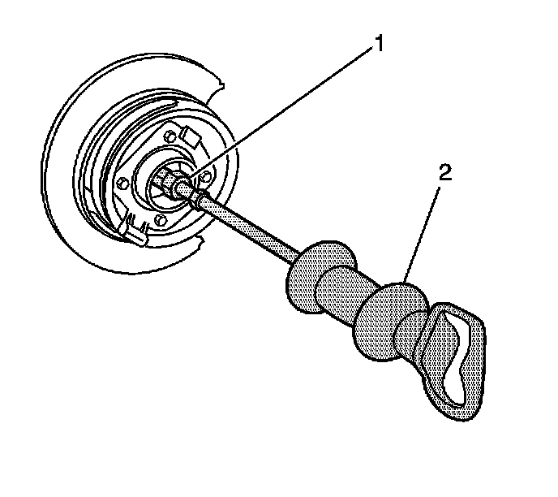
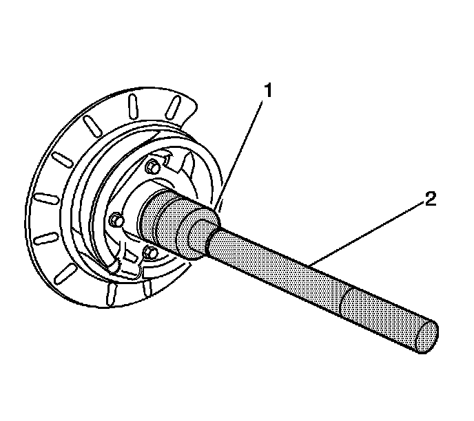
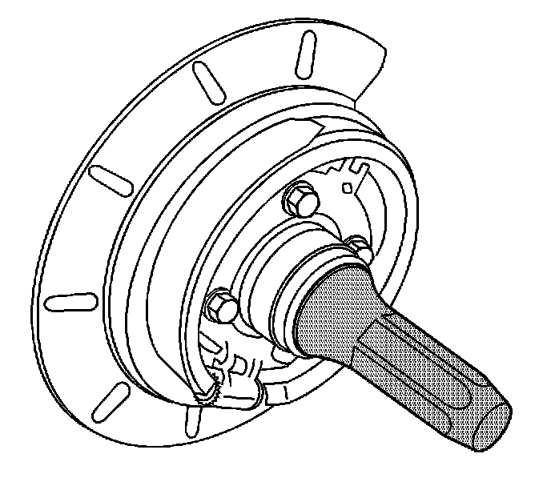

Rear Wheel Speed Sensor Ring Replacement
Rear Wheel Speed Sensor Ring Replacement
Tools Required
^ J 8092 Driver Handle
^ J 21128 Axle Pinion Oil Seal Installer
^ J 23690 Bearing Installer
^ J 2619-01 Slide Hammer
^ J 45857 Tone Wheel and/or Bearing Remover
^ J 45860 Tone Ring Installer
Removal Procedure
1. Raise the vehicle. Refer to Lifting and Jacking the Vehicle.
2. Remove the tire and wheel assembly.
3. Remove the rear wheel speed sensor.
4. Remove the rear axle housing cover.
5. Remove the axle shaft.

6. Remove the axle shaft seal, the bearing and the wheel speed sensor ring from the axle housing using the J 45857 (1) and the J 2619-01 (2).
Installation Procedure

1. Install the wheel speed sensor ring using the J 45860 (1) and the J 8092 (2).
2. Drive the wheel speed sensor ring into the axle housing until the tool bottoms against the tube.

3. Install the axle shaft bearing using the J 23690 (1) and the J 8092 (2).
4. Drive the axle shaft bearing into the axle housing until the tool bottoms against the tube.

5. Install the axle shaft seal using the J 21128.
6. Drive the tool into the bore until the axle shaft seal bottoms flush with the tube.
7. Install the axle shaft.
8. Install the rear axle housing cover.
9. Install the rear wheel speed sensor.
10. Install the tire and wheel assembly.
11. Fill the rear axle. Refer to Rear Axle Lubricant Replacement.
12. Lower the vehicle.